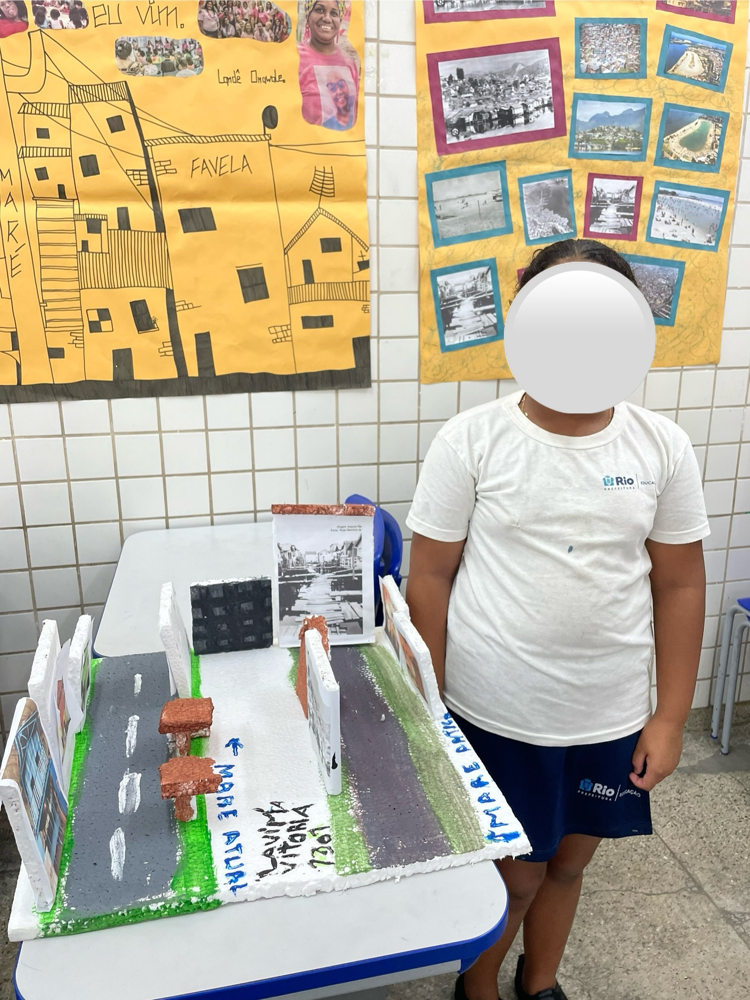
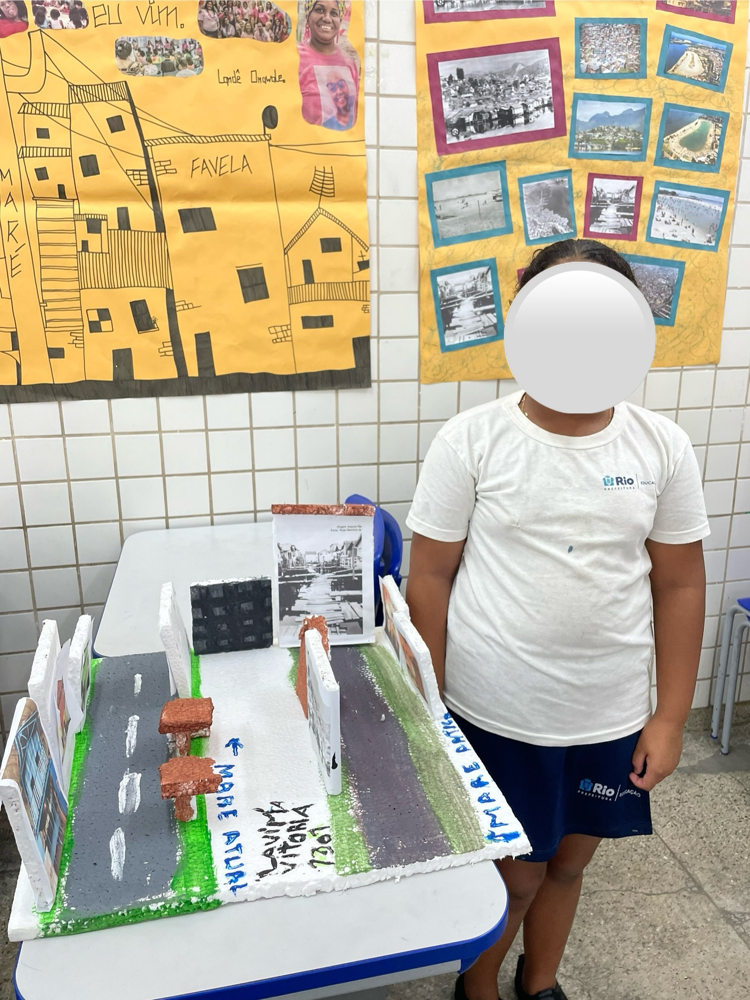
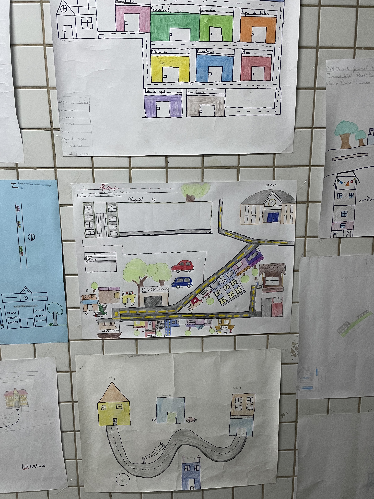
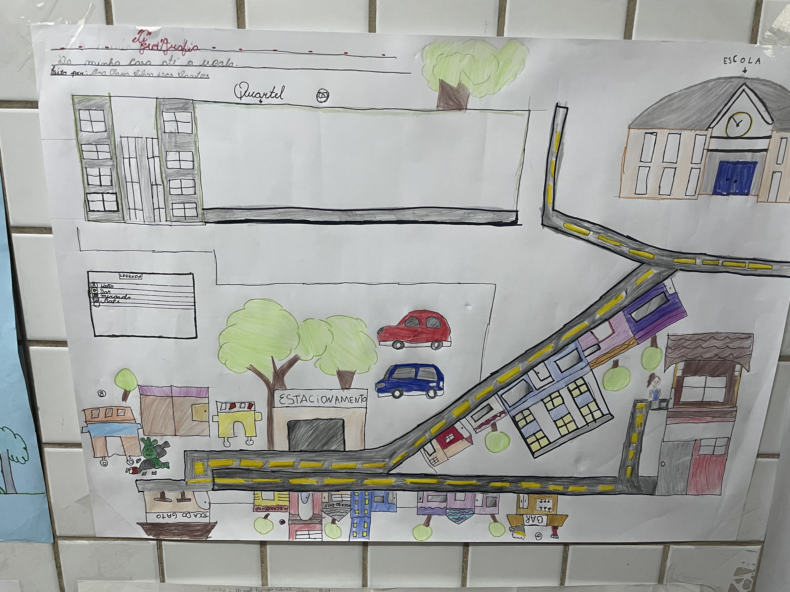
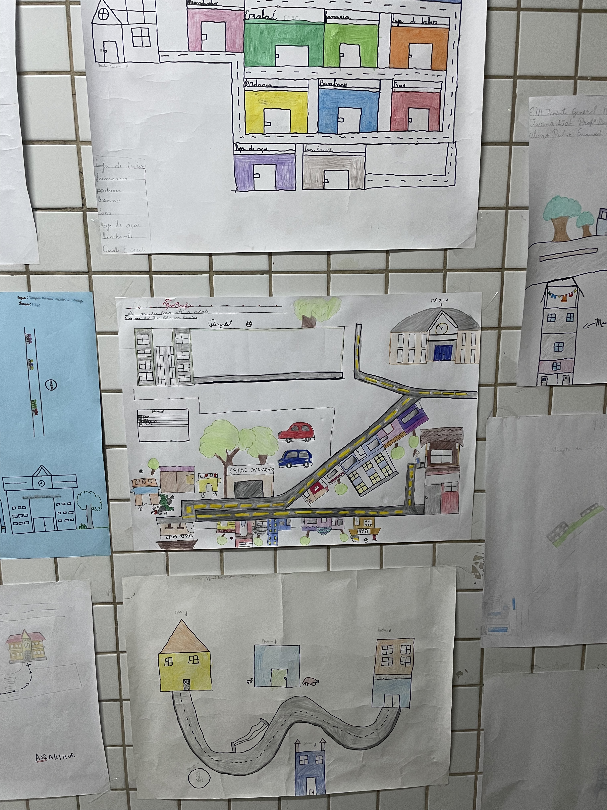
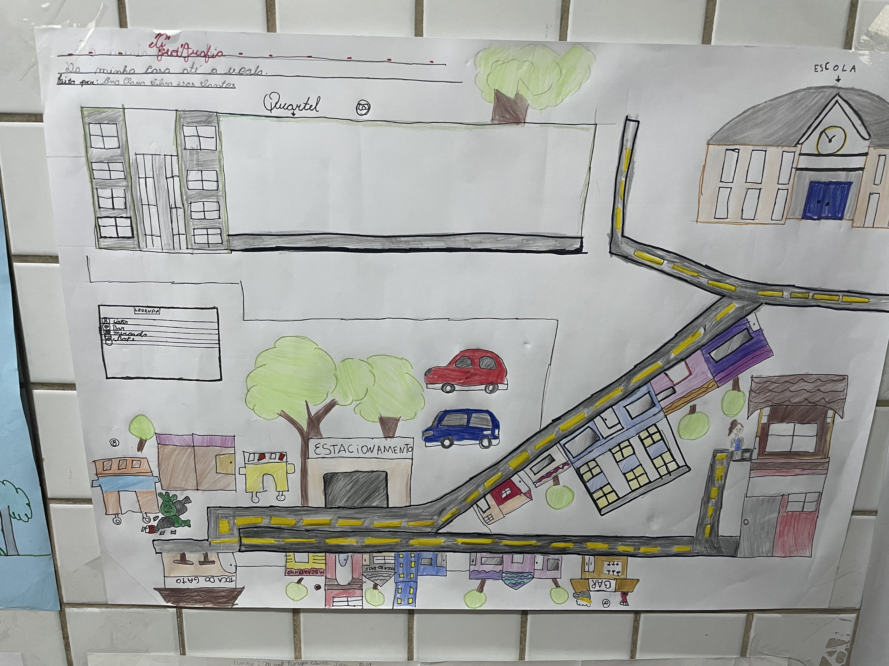

Produto educacional: Mapeamento Educativo
| Etapas |
Descrição |
| Passo 1: |
Vídeos sobre a Maré (conhecendo sobre o vasto território Mareense,
construído a partir de 16
comunidades ou favelas). |
| Passo 2: |
Roda de conversa (conversando sobre os lugares onde os (as) alunos
(as) moram, quais
características, lugares que têm maior convivência, lugares que não são legais de frequentar,
memórias felizes sobre o lugar e memórias tristes sobre o mesmo). |
| Passo 3: |
Construindo maquetes (propor a construção de maquetes que
materializem o lugar onde eles vivem,
indicando cada ponto formativo do mesmo, suas características físicas e, principalmente, o lar).
|
| Passo 4: |
Apresentando seus territórios (a partir das maquetes construídas
individualmente, os (as) alunos
(as) farão uma exposição das mesmas em sala de aula e, entre eles, irão mostrar aos colegas de
classe o que foi construído, onde mora, o que gosta de fazer onde mora e o que gostaria que
mudasse no local). |
| Passo 5: |
Conhecendo a cartografia (mostrar para os (as) alunos (as) como os
lugares são organizados em
uma cartografia, como é construída e explicar que a cartografia é construída a partir dos olhos
de quem vê). |
| Passo 6: |
Mapeamento Educativo (a partir do estudo sobre a cartografia, será
colocada a construção da
cartografia social como uma forma de intervenção da própria população local, em detrimento dos
seus conhecimentos intrínsecos sobre o território que será cartografado). |
Importante: A cartografia social permite às comunidades desenharem mapas dos territórios que ocupam. Os
mapas sociais são construídos de forma participativa e apresentam o cotidiano de uma comunidade em linguagem
simples e acessível. Esses mapas são criados com o objetivo de serem instrumentos de defesa dos direitos de
populações específicas. A cartografia social se distingue por seu caráter colaborativo e emancipatório, pois
é amplamente utilizada para ampliar a visibilidade de problemas sociais e culturais vividos por comunidades,
muitas vezes marginalizadas ou ignoradas pelos métodos de mapeamento convencionais. Na pesquisa construída
aqui sobre a Maré, iremos desenvolver a cartografia social afetiva, tendo o Mapeamento Educativo como
produto final do trabalho desenvolvido. A pesquisa ocorre de modo qualitativo e interpretativista crítico,
utilizando como ferramenta a cartografia social afetiva, muito importante para a gestão de políticas
públicas e essencial para a avaliação da realidade social, os processos de mudança e as condições de vida
das pessoas. Esse modo de mapeamento ajuda a identificar os problemas e necessidades de um determinado
território, a partir da observação da realidade. Dessa maneira, o mapeamento educativo visa registrar tudo o
que compõe uma região, bairro ou cidade, podendo ser utilizado em escolas, órgãos públicos ou movimentos
sociais. O mapeamento educativo pode ser dividido em três pontos: planejamento, execução e sistematização.
Baixar o eBook
 



 


